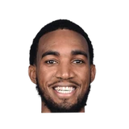

“I didn’t expect him to be so good [coming] right from Europe, but he’s pretty amazing. By the way, since we are talking about me being an underrated defender like coach [Karl] says. This year in OKC we won at home against Dallas with me stealing the ball from Doncic. Just so you guys know.”

What Danilo Gallinari has said about other NBA players and coaches
12 quotes from Danilo Gallinari about 12 other people around the NBA, newest first. Each one links to its original source.
Best quotes
“It doesn’t matter the size. You find big men dribbling [up] the court for hours in Europe. You can see that in all the European big men [in the NBA], starting with Nikola Jokic, who I played with. Most of the big men are like that. But I grew up playing point guard; I’ve never been a big. Even if I was the tallest one, I’ve always played point.”
#SacKings:Danilo Gallinari on addressing the referees about DeMarcus Cousins' trash talk:
“When you do trash talking, as long as you don't disrespect, I'm cool with that. But he was disrespecting me, thats why I approached him. I never approached nobody who wants to trash talk to me. I like that, I love that. But that has to be in the respect area. If you go out of the respect area, it doesn't work with me so that's why I wanted to talk to the ref.”
What NBA players and coaches have said about Danilo Gallinari →
Quotes per season
Danilo Gallinari talks most about
- Danilo Gallinari on Dennis Schroeder2 quotes
 Danilo Gallinari on Nikola Jokic2 quotes
Danilo Gallinari on Nikola Jokic2 quotes- Danilo Gallinari on Olimpia Milano2 quotes
 DeMarcus Cousins1 quote
DeMarcus Cousins1 quote James Harden1 quote
James Harden1 quote Luguentz Dort1 quote
Luguentz Dort1 quote Luka Doncic1 quote
Luka Doncic1 quote- Michael Malone1 quote
 Mike D'Antoni1 quote
Mike D'Antoni1 quote Milos Teodosic1 quote
Milos Teodosic1 quote Paul George1 quote
Paul George1 quote
Terrance Ferguson1 quote
2026-27
1 quoteDanilo Gallinari:
“That was the first time where I got traded not because of an owner or GM or coach situation or request. It was clearly a player request that didn't like what he saw. He wanted his friend or whatever relationship was there with Paul George, and so that was what I didn't like. I didn't say anything bad.”
2020-21
3 quotes“I didn’t expect him to be so good [coming] right from Europe, but he’s pretty amazing. By the way, since we are talking about me being an underrated defender like coach [Karl] says. This year in OKC we won at home against Dallas with me stealing the ball from Doncic. Just so you guys know.”
Brandon Rahbar:Danilo Gallinari on guarding James Harden if Lu Dort misses time:
“We have great 1 on 1 defenders with Hami, Terrance, Andre and Dennis. But it will be a team effort.”
Brandon Rahbar:Gallinari on Schroder:
“I have a long list of good things about Dennis. He’s a freak of nature. He’s unselfish. He’s the 6th man of the year. He’s one of the best two way players. He’s the only player who full court presses.”
2018-19
3 quotesMore Gallinari, on his former teammate Nikola Jokic:
“He’s one of the best centers in the league and it’s tough to guard him. He has unbelievable court vision. He doesn’t have any weaknesses offensively... He’s the secret to their winning. He’s an amazing player.”
“It doesn’t matter the size. You find big men dribbling [up] the court for hours in Europe. You can see that in all the European big men [in the NBA], starting with Nikola Jokic, who I played with. Most of the big men are like that. But I grew up playing point guard; I’ve never been a big. Even if I was the tallest one, I’ve always played point.”
Emiliano Carchia:Danilo Gallinari on the rumors in the last months about Milos Teodosic returning to Europe:
“I’m hopeful that he will stay with us. He’s a great guy and we have a very good relationship so hopefully he can stay with us for the whole season”
2016-17
2 quotesTJ McBride:Gallinari on Malone saying there is no vet leaders:
“I do not agree with that. That is not the problem. I just don't agree with that.”
Danilo Gallinari:
“In Denver I am very well, there was a chance last year to go to some other team before the deadline in February, but I refused. If I return to Italy would be back to Olimpia but with the intention of winning, I don't like the idea of nostalgic revisiting.”
2012-13
1 quote#SacKings:Danilo Gallinari on addressing the referees about DeMarcus Cousins' trash talk:
“When you do trash talking, as long as you don't disrespect, I'm cool with that. But he was disrespecting me, thats why I approached him. I never approached nobody who wants to trash talk to me. I like that, I love that. But that has to be in the respect area. If you go out of the respect area, it doesn't work with me so that's why I wanted to talk to the ref.”
2011-12
2 quotesDanilo Gallinari:
“In my case, it was very funny because when I was in Europe, I was playing in a system where you do this, (then) you do this, and (then) you do your thing. You go in and out of the things that you do better. When I got to the states I was playing for Mike D’Antoni, and in our offensive system, every ball you catch, you’ve got to either shoot it, or do something. You’ve got to make things happen”
“I am very excited for the chance given to me by Milano. I really hope I can give to the supporters a lot of satisfactions”